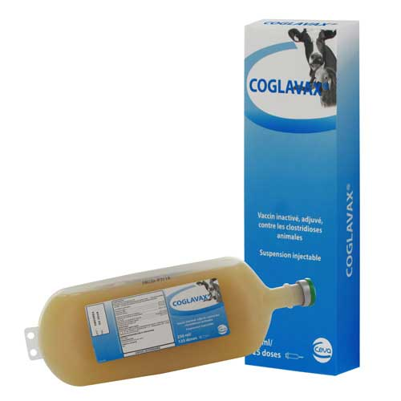

واكسن كشته پلیوالان انتروتوكسمی علیه عفونتهای كلستریدیایی در نشخواركنندگان، شركت CEVA
📝تركیب:
واکسن کوگلاواکس حاوی آنتیژنهای كلستریدیوم پرفریجنس تیپهای A,B,C,D و سایر عفونتهای کلستریدیایی شامل كلستریدیوم نووهای تیپ B، كلستریدیوم سپتیكوم، كلستریدیوم شوهای و كلستریدیوم تتانی میباشد.
Alpha toxoid 2 IU/ml
Beta toxoid 10 IU/ml
Epsilon toxoid 5 IU/ml
Toxoid of Cl. septicum 2.5 IU/ml
Toxoid of Cl. novyi B (Cl.oedematiens) 3.5 IU/ml
Toxoid of Cl. tetani 2.5 IU/ml
Anaculture of Cl. chauvoei 90% Protection
Aluminium hydroxide (AI(OH)3) 0.6-0.8%
Preservative: Formaldehyde qsf ≤005%
📝موارد مصرف:
گاو، گوسفند و بز.
پیشگیری از انتروتوكسمی کلستریدیایی با ایمنی فعال ناشی از کلستریدیوم پرفریجنس تیپهای A,B,C,D و عفونتهای كلستریدیایی ناشی از كلستریدیوم نووهای تیپ B، سپتیكوم، تتانی و شووهای میباشد.
📝موارد استفاده در بیماریهای:
1. انتروتوکسمی در گوسفندان بالغ، 2. اسهال خونی باسیلی در گوساله ها و بره ها، 3. بیماری قلوه نرمی، 4. انتریتهای هموراژیك در بره ها و بزغاله ها، 5. هپاتیت نكروتیك (قانقاریا)، 6. ادم بدخیم (براكسی)، 7. شاربن علامتی، 8. كزاز.
📝دوز و نحوه مصرف:
تزریق زیرجلدی
| زمان اولین تزریق | زمان دومین تزریق | یادآور | |
| گوسفند و بز | |||
| گوسفند و بز غیر آبستن، قوچ و بز نر | 2ml در هر زمان | 4 هفته بعد از اولین تزریق | 2ml، یكسال بعد از آخرین تزریق |
| گوسفند و بز آبستن | 2ml قبل از 2/5 ماهگی آبستنی | 4 هفته بعد از اولین تزریق (قبل از شروع چهارمین ماه آبستنی) | 2ml، یكسال بعد از آخرین تزریق (قبل از چهارمین ماه آبستنی) |
| بره و بزغاله | 2ml در سن 3 هفتگی | 4 هفته بعد از اولین تزریق | |
| گاو | |||
| گوسالههای كمتر از 100كیلوگرم | 2ml در هر زمان | 4 هفته بعد از اولین تزریق | 2ml، یكسال بعد از آخرین تزریق |
| گوساله و گاو بالغ | 4ml در هر زمان | 4 هفته بعد از اولین تزریق | 4ml، یكسال بعد از آخرین تزریق |
| گاو آبستن | 4ml در شروع ماه 6 آبستنی | 4 هفته بعد از اولین تزریق | 4ml، یكسال بعد از آخرین تزریق و در صورت امكان نزدیك به ماه هفتم آبستنی |
◽️ به منظور به دست آوردن بالاترین سطح آنتی بادی كلستریدیایی درحیوانات آبستن، دومین تزریق در اولین ◽️ واكسیناسیون و یا واكسیناسیون یادآور، حداكثر 2 هفته قبل از زایمان باشد.
◽️ دامهایی كه از مادر واكسینه متولد شدهاند، از 8 هفتگی واكسینه میشوند.
◽️ دامهایی كه از مادر واكسینه نشده متولد شدهاند، از 3 هفتگی واكسینه میشوند.
📝دوره منع مصرف:
ندارد.
📝تداخلات دارویی:
ندارد.
📝احتیاط:
◽️ تحت شرایط بهداشتی تزریق گردد.
◽️ قبل از استفاده، بطری واكسن به آرامی تكان داده شود.
◽️ به دلیل حساسیت بالای بزها توصیه میشود ابتدا در تعداد محدودی از بزها تزریق صورت گیرد و به منظور جلوگیری از بروز شوك احتمالی، آب فراوان و تزریق آنتیهیستامین توصیه میگردد.
◽️ تنها به حیوانات سالم تزریق شود.
◽️ در صورت تزریق تصادفی به واكسیناتور، مراقبتهای پزشكی الزامی است.
📝شرایط نگهداری:
بین 8-2 درجه سانتیگراد و دور از نور خورشید نگهداری شود.
📝بستهبندی:
بطری پلاستیكی 250 میلیلیتری
📝ساخت:
سایت CEVA-PHYLAXIA بوداپست – مجارستان بخش تولید فرآوردههای بیولوژیك شركت CEVA SANTE ANIMALE فرانسه.